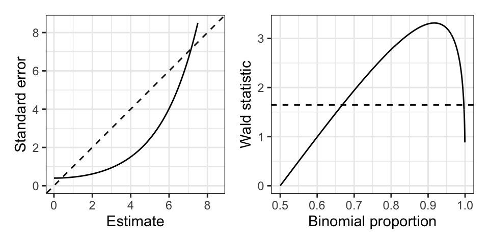

24 Logistic regression
24.1 Model definition and interpretation
24.1.1 Model definition.
Recall from Chapter 4 that the logistic regression model is \[ m_i y_i \overset{\text{ind}} \sim \text{Bin}(m_i, \pi_i); \quad \text{logit}(\pi_i) = \log\frac{\pi_i}{1-\pi_i} = \boldsymbol{x}^T_{i*}\boldsymbol{\beta}. \] Here we use the canonical logit link function, although other link functions are possible. We also set the offsets to 0. The interpretation of the parameter \(\beta_j\) is that a unit increase in \(x_j\)—other predictors held constant—is associated with an (additive) increase of \(\beta_j\) on the log-odds scale or a multiplicative increase of \(e^{\beta_j}\) on the odds scale. Note that logistic regression data come in two formats: ungrouped and grouped. For ungrouped data, we have \(m_1 = \dots = m_n = 1\), so \(y_i \in \{0,1\}\) are Bernoulli random variables. For grouped data, we can have several independent Bernoulli observations per predictor \(\boldsymbol{x}_{i*}\), which give rise to binomial proportions \(y_i \in [0,1]\). This happens most often when all the predictors are discrete. You can always convert grouped data into ungrouped data, but not necessarily vice versa. We’ll discuss below that the grouped and ungrouped formulations of logistic regression have the same MLE and standard errors but different deviances.
24.1.2 Generative model equivalent.
Consider the following generative model for \((\boldsymbol{x}, y) \in \mathbb{R}^{p-1} \times \{0,1\}\): \[ y \sim \text{Ber}(\pi); \quad \boldsymbol{x}|y \sim \begin{cases} N(\boldsymbol{\mu}_0, \boldsymbol{V}) \quad \text{if } y = 0 \\ N(\boldsymbol{\mu}_1, \boldsymbol{V}) \quad \text{if } y = 1 \end{cases}. \] Then, we can derive that \(y|\boldsymbol{x}\) follows a logistic regression model (called a discriminative model because it conditions on \(\boldsymbol{x}\)). Indeed, \[ \begin{aligned} \text{logit}(p(y = 1|\boldsymbol{x})) &= \log\frac{p(y = 1)p(\boldsymbol{x}|y = 1)}{p(y = 0)p(\boldsymbol{x}|y = 0)} \\ &= \log\frac{\pi \exp\left(-\frac12(\boldsymbol{x} - \boldsymbol{\mu}_1)^T \boldsymbol{V}^{-1}(\boldsymbol{x} - \boldsymbol{\mu}_1)\right)}{(1-\pi) \exp\left(-\frac12(\boldsymbol{x} - \boldsymbol{\mu}_0)^T \boldsymbol{V}^{-1}(\boldsymbol{x} - \boldsymbol{\mu}_0)\right)} \\ &= \beta_0 + \boldsymbol{x}^T \boldsymbol{V}^{-1}(\boldsymbol{\mu}_1 - \boldsymbol{\mu}_0) \\ &\equiv \beta_0 + \boldsymbol{x}^T \boldsymbol{\beta}_{-0}. \end{aligned} \] This is another natural route to motivating the logistic regression model.
24.1.3 Special case: \(2 \times 2\) contingency table.
Suppose that \(x \in \{0,1\}\), and consider the logistic regression model \(\text{logit}(\pi_i) = \beta_0 + \beta_1 x_i\). For example, suppose that \(x \in \{0,1\}\) encodes treatment (1) and control (0) in a clinical trial, and \(y_i \in \{0,1\}\) encodes success (1) and failure (0). We make \(n\) observations of \((x_i, y_i)\) in this ungrouped setup. The parameter \(e^{\beta_1}\) can be interpreted as the odds ratio: \[ e^{\beta_1} = \frac{\mathbb{P}[y = 1|x=1]/\mathbb{P}[y = 0|x=1]}{\mathbb{P}[y = 1|x=0]/\mathbb{P}[y = 0|x=0]}. \] This parameter is the multiple by which the odds of success increase when going from control to treatment. We can summarize such data via the \(2 \times 2\) contingency table (Table 24.1). A grouped version of this data would be \(\{(x_1, y_1) = (0, 7/24), (x_2, y_2) = (1, 9/21)\}\). The null hypothesis \(H_0: \beta_1 = 0 \Longleftrightarrow H_0: e^{\beta_1} = 1\) states that the success probability in both rows of the table is the same.
| Success | Failure | Total | |
|---|---|---|---|
| Treatment | 9 | 12 | 21 |
| Control | 7 | 17 | 24 |
| Total | 16 | 29 | 45 |
24.2 Logistic regression with case-control studies
In a prospective study (e.g. a clinical trial), we assign treatment or control (i.e., \(x\)) to individuals, and then observe a binary outcome (i.e., \(y\)). Sometimes, the outcome \(y\) takes a long time to measure or has a highly imbalanced distribution in the population (e.g., the development of lung cancer). In this case, an appealing study design is the retrospective study, where individuals are sampled based on their response values (e.g., presence of lung cancer) rather than their treatment/exposure status (e.g., smoking). It turns out that a logistic regression model is appropriate for such retrospective study designs as well.
Indeed, suppose that \(y|\boldsymbol{x}\) follows a logistic regression model. Let’s try to figure out the distribution of \(y|\boldsymbol{x}\) in the retrospectively gathered sample. Letting \(z \in \{0,1\}\) denote the indicator that an observation is sampled, define \(\rho_1 \equiv \mathbb{P}[z = 1|y = 1]\) and \(\rho_0 \equiv \mathbb{P}[z = 1|y = 0]\), and assume that \(\mathbb{P}[z = 1, y, \boldsymbol{x}] = \mathbb{P}[z = 1 | y]\). The latter assumption states that the predictors \(\boldsymbol{x}\) were not used in the retrospective sampling process. Then,
\[ \begin{split} \text{logit}(\mathbb{P}[y = 1|z = 1, \boldsymbol{x}]) &= \log \frac{\rho_1 \mathbb{P}[y = 1|\boldsymbol{x}]}{\rho_0 \mathbb{P}[y = 0|\boldsymbol{x}]} \\ &= \log \frac{\rho_1}{\rho_0} + \text{logit}(\mathbb{P}[y = 1|\boldsymbol{x}]) \\ &= \left(\log \frac{\rho_1}{\rho_0} + \beta_0\right) + \boldsymbol{x}^T \boldsymbol{\beta}_{-0}. \end{split} \]
Thus, conditioning on retrospective sampling changes only the intercept term, but preserves the coefficients of \(\boldsymbol{x}\). Therefore, we can carry out inference for \(\boldsymbol{\beta}_{-0}\) in the same way regardless of whether the study design is prospective or retrospective.
24.3 Estimation and inference
24.3.1 Score and Fisher information
Recall from Chapter 4 that
\[ \boldsymbol{U}(\boldsymbol{\beta}) = \frac{1}{\phi_0}\boldsymbol{X}^T \boldsymbol{M} \boldsymbol{W} (\boldsymbol{y} - \boldsymbol{\mu}) \quad \text{and} \quad \boldsymbol{I}(\boldsymbol{\beta}) = \frac{1}{\phi_0}\boldsymbol{X}^T \boldsymbol{W} \boldsymbol{X}, \]
where
\[ \begin{aligned} \boldsymbol{W} &\equiv \text{diag}\left(\frac{w_i}{V(\mu_i)(d\eta_i/d\mu_i)^2}\right), \\ \boldsymbol{M} &\equiv \text{diag}\left(\frac{\partial\eta_i}{\partial \mu_i}\right). \end{aligned} \]
Since logistic regression uses a canonical link function, we get the following simplifications:
\[ \begin{aligned} \boldsymbol{W} &= \text{diag}\left(w_i V(\mu_i)\right) = \text{diag}\left(m_i \pi_i(1-\pi_i)\right), \\ \boldsymbol{M} &= \text{diag}\left(\frac{1}{\pi_i(1-\pi_i)}\right). \end{aligned} \]
Here we have substituted the notation \(\boldsymbol{\pi}\) for \(\boldsymbol{\mu}\), and recall that for logistic regression, \(\phi_0 = 1\), \(w_i = m_i\), and \(V(\pi_i) = \pi_i(1-\pi_i)\). Therefore, the score equations for logistic regression are
\[ 0 = \boldsymbol{X}^T \text{diag}\left(m_i\right)(\boldsymbol{y} - \boldsymbol{\widehat{\mu}}) \quad \Longleftrightarrow \quad \sum_{i = 1}^n m_i x_{ij}(y_i-\widehat{\pi}_i) = 0, \tag{24.1}\] for \(j = 0, \dots, p-1\). We can solve these equations using IRLS. The Fisher information is
\[ \boldsymbol{I}(\boldsymbol{\beta}) = \boldsymbol{X}^T \text{diag}\left(m_i \pi_i(1-\pi_i)\right) \boldsymbol{X}. \]
24.3.2 Wald inference
Using the results in the previous paragraph, we can carry out Wald inference based on the normal approximation
\[ \boldsymbol{\widehat \beta} \overset \cdot \sim N\left(\boldsymbol \beta, \left(\boldsymbol X^T\text{diag}(m_i \widehat \pi_i(1-\widehat \pi_i))\boldsymbol X\right)^{-1}\right). \]
This approximation holds for \(\sum_{i = 1}^n m_i \rightarrow \infty\).
24.3.3 Example: \(2 \times 2\) contingency table.
Suppose we have a \(2 \times 2\) contingency table. The grouped logistic regression formulation of these data is
\[ y_0 \sim \frac{1}{m_0}\text{Bin}(m_0, \pi_0); \quad y_1 \sim \frac{1}{m_1}\text{Bin}(m_1, \pi_1); \quad \text{logit}(\pi_i) = \beta_0 + \beta_1 x_i. \]
In this case, we have \(n = p = 2\), so the grouped logistic regression model is saturated. Therefore, we have
\[ \hat \pi_0 = y_0, \quad \text{and} \quad \hat \pi_1 = y_1, \quad \text{so} \quad \hat \beta_1 = \log \frac{\hat \pi_1 / (1 - \hat \pi_1)}{\hat \pi_0 / (1 - \hat \pi_0)} = \log \frac{y_1 / (1 - y_1)}{y_0 / (1 - y_0)}. \]
The squared Wald standard error for \(\hat \beta_1\) is
\[ \begin{split} \text{SE}^2(\widehat \beta_1) &\equiv \left[\left(\boldsymbol X^T\text{diag}(m_i \widehat \pi_i(1-\widehat \pi_i))\boldsymbol X\right)^{-1}\right]_{22} \\ &= \left[\left(\begin{pmatrix} 1 & 0 \\ 1 & 1 \end{pmatrix}^T\begin{pmatrix} m_0y_0(1-y_0) & 0 \\ 0 & m_1y_1(1-y_1) \end{pmatrix}\begin{pmatrix} 1 & 0 \\ 1 & 1 \end{pmatrix}\right)^{-1}\right]_{22} \\ &= \left[\left(\begin{pmatrix} m_0 y_0 (1-y_0) + m_1 y_1 (1-y_1) & m_1 y_1(1-y_1) \\ m_1 y_1(1-y_1) & m_1 y_1(1-y_1) \end{pmatrix}\right)^{-1}\right]_{22} \\ &= \frac{m_0 y_0 (1-y_0) + m_1 y_1 (1-y_1)}{m_0y_0(1-y_0) \cdot m_1y_1(1-y_1)} \\ &= \frac{1}{m_0y_0(1-y_0)} + \frac{1}{m_1y_1(1-y_1)}. \end{split} \]
Therefore, the Wald test for \(H_0: \beta_1 = 0\) rejects if
\[ \left|\frac{\hat \beta_1}{\text{SE}(\hat \beta_1)}\right| = \left|\frac{\log \frac{y_1 / (1 - y_1)}{y_0 / (1 - y_0)}}{\sqrt{\frac{1}{m_0y_0(1-y_0)} + \frac{1}{m_1y_1(1-y_1)}}}\right| > z_{1-\alpha/2}. \]
24.3.4 Hauck-Donner effect.
Unfortunately, Wald inference in finite samples does not always perform very well. The Wald test above is known to be conservative if one or more of the mean parameters (in this case, \(\pi_i\)) tends to the edge of the parameter space (in this case, \(\pi_i \rightarrow 0\) or \(\pi_i \rightarrow 1\)). This is called the Hauck-Donner effect. As an example, consider testing \(H_0: \beta_0 = 0\) in the intercept-only model
\[ my \sim \text{Bin}(m, \pi); \quad \text{logit}(\pi) = \beta_0. \]
The Wald test statistic is \(z \equiv \widehat \beta/\text{SE} = \text{logit}(y)\sqrt{my(1-y)}\). This test statistic actually tends to decrease as \(y \rightarrow 1\) (see Figure 24.1), since the standard error grows faster than the estimate itself. So the test statistic becomes less significant as we go further away from the null! A similar situation arises in the \(2 \times 2\) contingency table example above, where the Wald test for \(H_0: \beta_1 = 0\) becomes less significant as \(y_0 \rightarrow 0\) and \(y_1 \rightarrow 1\). As a limiting case of this, the Wald test is undefined if \(y_0 = 0\) and \(y_1 = 1\). This situation is a special case of perfect separability in logistic regression: when a hyperplane in covariate space separates observations with \(y_i = 0\) from those with \(y_i = 1\). Some of the maximum likelihood coefficient estimates are infinite in this case, causing the Wald test to be undefined since it uses these coefficient estimates as test statistics.
24.3.5 Likelihood ratio inference
24.3.5.1 The Bernoulli and binomial deviance.
Let’s first compute the deviance of a Bernoulli or binomial model. These deviances are the same because these two models have the same natural parameter and log-partition function. The unit deviance is
\[ t(y, \pi) = y \log \pi + (1-y)\log(1-\pi). \]
Hence, we have
\[ t(y, y) = y \log y + (1-y) \log(1-y). \]
Hence, the unit deviance is
\[ d(y, \mu) \equiv 2(t(y,y)-t(y,\pi)) = 2\left(y \log \frac{y}{\pi} + (1-y)\log \frac{1-y}{1-\pi}\right). \]
The total deviance, therefore, is
\[ \begin{split} D(\boldsymbol y, \hat{\boldsymbol \pi}) &\equiv \sum_{i = 1}^n w_i d(y_i, \widehat \pi_i) \\ &= 2\sum_{i = 1}^n \left(m_i y_i \log \frac{y_i}{\widehat \pi_i} + m_i(1-y_i) \log\frac{1-y_i}{1-\widehat \pi_i}\right). \end{split} \tag{24.2}\]
24.3.6 Comparing the deviances of grouped and ungrouped logistic regression models.
Let us pause to compare the total deviances of grouped and ungrouped logistic regression models. Consider the following grouped and ungrouped models:
\[ y^{\text{grp}}_i \overset{\text{ind}} \sim \frac{1}{m_i}\text{Bin}(m_i, \pi_i) \quad \text{and} \quad y^{\text{ungrp}}_{ik} \overset{\text{ind}} \sim \text{Ber}(\pi_i), \quad k = 1, \dots, m_i, \] where \[ \text{logit}(\pi_i) = \boldsymbol x_{i*}^T \boldsymbol \beta. \]
The relationship between the grouped and ungrouped observations is that
\[ y^{\text{grp}}_i = \frac{1}{m_i}\sum_{k = 1}^{m_i} y^{\text{ungrp}}_{ik} \equiv \bar y^{\text{ungrp}}_i. \]
Since the grouped and ungrouped logistic regression models have the same likelihoods, it follows that they have the same maximum likelihood estimates \(\widehat{\boldsymbol \beta}\) and \(\widehat{\boldsymbol \pi}\). However, the total deviances of the two models are different. The total deviance of the grouped model can be derived from equation (24.2):
\[ \begin{split} &D(\boldsymbol y^{\text{grp}}, \hat{\boldsymbol \pi}) \\ &\quad= 2\sum_{i = 1}^n \left(m_i y^{\text{grp}}_i \log \frac{y^{\text{grp}}_i}{\widehat \pi_i} + m_i(1-y^{\text{grp}}_i) \log\frac{1-y^{\text{grp}}_i}{1-\widehat \pi_i}\right). \end{split} \tag{24.3}\]
On the other hand, the total deviance of the ungrouped model is
\[ \begin{split} &D(\boldsymbol y^{\text{ungrp}}, \hat{\boldsymbol \pi}) \\ &= 2\sum_{i = 1}^n \sum_{k = 1}^{m_i} \left(y^{\text{ungrp}}_{ik} \log \frac{y^{\text{ungrp}}_{ik}}{\widehat \pi_i} + (1-y^{\text{ungrp}}_{ik}) \log\frac{1-y^{\text{ungrp}}_{ik}}{1-\widehat \pi_i}\right) \\ &= 2\sum_{i = 1}^n \sum_{k = 1}^{m_i} \left(y^{\text{ungrp}}_{ik} \log \frac{1}{\widehat \pi_i} + (1-y^{\text{ungrp}}_{ik}) \log\frac{1}{1-\widehat \pi_i}\right) \\ &= 2\sum_{i = 1}^n \left(m_i y^{\text{grp}}_i \log \frac{1}{\widehat \pi_i} + m_i(1-y^{\text{grp}}_i) \log\frac{1}{1-\widehat \pi_i}\right). \end{split} \tag{24.4}\]
In the second line, we used the fact that \(y \log y \rightarrow 0\) and \((1-y)\log(1-y) \rightarrow 0\) as \(y \rightarrow 0\) or \(y \rightarrow 1\). Comparing the grouped (24.3) and ungrouped (24.4) total deviances, we see that these are given by related, but different expressions. Because small dispersion asymptotics applies to the grouped model but not the ungrouped model, we have that under small-dispersion asymptotics,
\[ D(\boldsymbol y^{\text{grp}}, \hat{\boldsymbol \pi}) \overset \cdot \sim \chi^2_{n-p} \quad \text{but} \quad D(\boldsymbol y^{\text{ungrp}}, \hat{\boldsymbol \pi}) \not \sim \chi^2_{n-p}. \]
24.3.6.1 Likelihood ratio inference for one or more coefficients.
Letting \(\boldsymbol{\widehat \pi}_0\) and \(\boldsymbol{\widehat \pi}_1\) be the MLEs from two nested models, we can then express the likelihood ratio statistic as
\[ D(\boldsymbol y, \boldsymbol{\widehat \pi}_0) - D(\boldsymbol y, \boldsymbol{\widehat \pi}_1) = 2\sum_{i = 1}^n \left(m_i y_i \log \frac{\widehat \pi_{i1}}{\widehat \pi_{i0}} + m_i(1-y_i) \log\frac{1-\widehat \pi_{i1}}{1-\widehat \pi_{i0}}\right). \]
Note that this expression holds for grouped or ungrouped logistic regression models. We can then construct a likelihood ratio test in the usual way. Likelihood ratio inference can be justified by either large-sample or small-dispersion asymptotics.
24.4 Goodness of fit testing
In grouped logistic regression, we can also use the likelihood ratio test to test goodness of fit. To do so, we compare the total deviance of the fitted model (24.2) to a chi-squared quantile. In particular, the deviance-based goodness of fit test rejects when:
\[ \begin{split} &D(\boldsymbol{y}, \hat{\boldsymbol{\pi}}) = \\ &2\sum_{i = 1}^n \left(m_i y_i \log \frac{y_i}{\widehat \pi_i} + m_i(1-y_i) \log\frac{1-y_i}{1-\widehat \pi_i}\right) > \chi^2_{n-p}(1-\alpha). \end{split} \tag{24.5}\]
This test is justified by small-dispersion asymptotics based on the saddlepoint approximation, which is decent when \(\min(m_i \pi_i, (1-m_i)\pi_i) \geq 3\) for each \(i\).
24.5 Example: \(2 \times 2\) table
Let us revisit the example of the \(2 \times 2\) table model, within which we would like to test \(H_0: \beta_1 = 0\). Note that we can view this as a goodness of fit test of the intercept-only model in a grouped logistic regression model since the alternative model is the saturated model (it has two observations and two parameters). To compute the likelihood ratio statistic, we first need to fit the intercept-only model. The score equations (24.1) reduce to:
\[ m_0 (y_0 - \hat \pi) + m_1 (y_1 - \hat \pi) = 0 \quad \Longrightarrow \quad \hat \pi_0 = \hat \pi_1 = \hat \pi = \frac{m_0 y_0 + m_1 y_1}{m_0 + m_1}. \]
Therefore, the deviance-based test of \(H_0: \beta_1 = 0\) rejects when:
\[ \begin{split} D(\boldsymbol{y}, \boldsymbol{\widehat \pi}) &= 2\sum_{i = 1}^n \left(m_i y_i \log \frac{y_i}{\widehat \pi_i} + m_i(1-y_i) \log\frac{1-y_i}{1-\widehat \pi_i}\right) \\ &= \left(m_0 y_0 \log\frac{y_0}{\hat \pi} + m_0(1-y_0)\log\frac{1-y_0}{1-\hat \pi}\right) + \\ &\quad \quad \left(m_1 y_1 \log\frac{y_1}{\hat \pi} + m_1(1-y_1)\log\frac{1-y_1}{1-\hat \pi}\right) \\ &> \chi^2_{1}(1-\alpha). \end{split} \]
Likelihood ratio inference can give nontrivial conclusions in cases when Wald inference cannot, e.g. in the case of perfect separability. In the above example, suppose \(y_0 = 0\) and \(y_1 = 1\), giving perfect separability. Then, we can use the fact that \(y \log y \rightarrow 0\) and \((1-y)\log(1-y) \rightarrow 0\) as \(y \rightarrow 0\) or \(y \rightarrow 1\) to see that:
\[ \begin{split} D(\boldsymbol{y}, \boldsymbol{\widehat \pi}) &= 2\left(m_0 \log\frac{1}{1-\hat \pi} + m_1 \log\frac{1}{\hat \pi}\right) \\ &= 2\left(m_0 \log \frac{m_0 + m_1}{m_0} + m_1 \log \frac{m_0 + m_1}{m_1}\right). \end{split} \tag{24.6}\]
This gives us a finite value, which we can compare to \(\chi^2_{1}(1-\alpha)\) to test \(H_0: \beta_1 = 0\). Even though the likelihood ratio statistic is still defined, we do still have to be careful because the data may suggest that the parameters are too close to the boundary of the parameter space. However, the rate at which the test breaks down as the parameters approach this boundary is slower than the rate at which the Wald test breaks down.
24.6 Score-based inference
Here we present only the score-based goodness-of-fit test. Recalling Section 22.4.4, the score statistic for goodness of fit is Pearson’s \(X^2\) statistic:
\[ X^2 = \sum_{i = 1}^n \frac{w_i (y_i - \widehat \mu_i)^2}{V(\widehat \mu_i)} = \sum_{i = 1}^n \frac{m_i(y_i - \widehat \pi_i)^2}{\widehat \pi_i(1-\widehat \pi_i)}. \tag{24.7}\]
This test is justified by small-dispersion asymptotics based on the central limit theorem, which is decent when \(\min(m_i \pi_i, (1-m_i)\pi_i) \geq 5\) for each \(i\).
24.7 Fisher’s exact test
As an alternative to asymptotic tests for logistic regression, in the case of \(2 \times 2\) tables, there is an exact test of \(H_0: \beta_1 = 0\). Suppose we have:
\[ s_1 = m_1y_1 \sim \text{Bin}(m_1, \pi_1) \quad \text{and} \quad s_2 = m_2y_2 \sim \text{Bin}(m_2, \pi_2). \tag{24.8}\]
The trick is to conduct inference conditional on \(s_1 + s_2\). Note that under \(H_0: \pi_1 = \pi_2\), we have:
\[ \begin{split} &\mathbb{P}[s_1 = t | s_1+s_2 = v] \\ &\quad= \mathbb{P}[s_1 = t | s_1 + s_2 = v] \\ &\quad= \frac{\mathbb{P}[s_1 = t, s_2 = v-t]}{\mathbb{P}[s_1 + s_2 = v]} \\ &\quad= \frac{{m_1 \choose t}\pi^{t}(1-\pi)^{m_1 - t}{m_2 \choose v-t}\pi^{v-t}(1-\pi)^{m_2 - (v-t)}}{{m_1 + m_2 \choose v}\pi^v (1-\pi)^{m_1 + m_2 - v}} \\ &\quad= \frac{{m_1 \choose t}{m_2 \choose v-t}}{{m_1 + m_2 \choose v}}. \end{split} \tag{24.9}\]
Therefore, a finite-sample \(p\)-value to test \(H_0: \pi_1 = \pi_2\) versus \(H_1: \pi_1 > \pi_2\) is \(\mathbb{P}[s_1 \geq t | s_1 + s_2]\), which can be computed exactly based on the formula above.